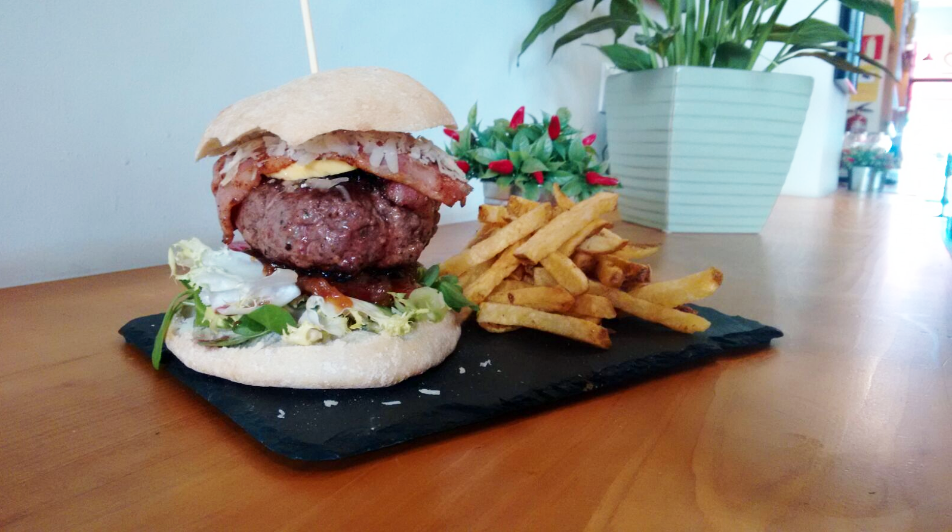
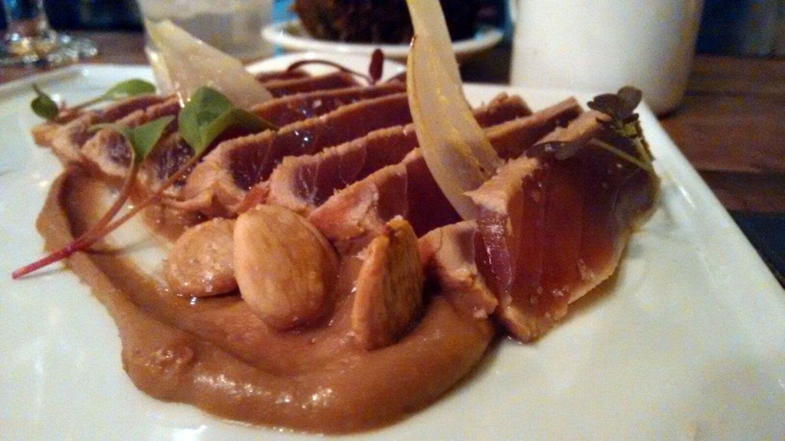
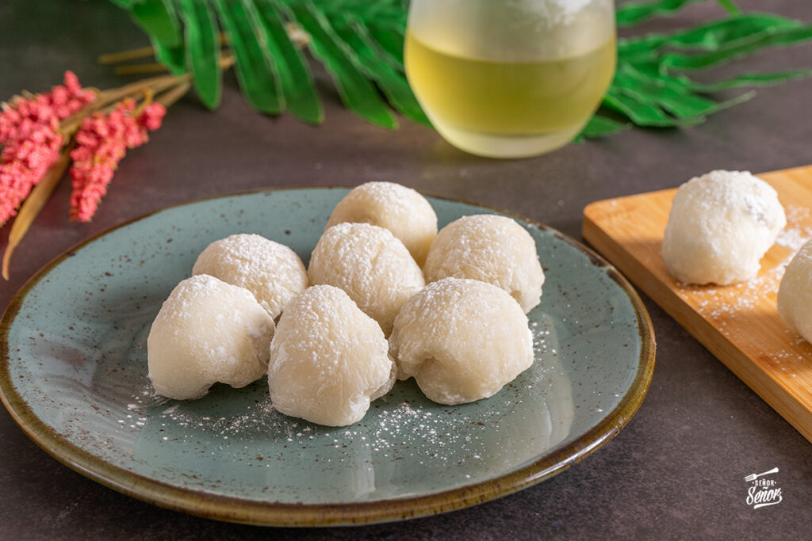

Nuestros Platos destacados
Pulpito Wey
Un pulpo a la brasa servido con una crema de palta y lima. Este platillo tiene un toque mexicano gracias al pico de gallo y la mayonesa de chipotles. Es ideal para acompañarlo con el cóctel Cucumber Rush, recomendado para realzar los sabores.

Hamburguesa del Rey
La Hamburguesa del Rey es un plato espectacular que destaca por su carne de vacuno de alta calidad, combinada con foie, bacon, queso parmesano, lechuga, tomate natural y cebolla caramelizada. Esta deliciosa hamburguesa de 250 gramos se sirve con patatas fritas y es ideal para quienes buscan una experiencia gourmet en una hamburguesa. Cada bocado es una mezcla perfecta de sabores intensos, convirtiéndola en una de las favoritas del menú.
Tataki de atún
El Tataki de atún es un plato fresco y delicioso, donde el atún se sella ligeramente por fuera y se sirve crudo en el centro. Se acompaña de una salsa sabrosa y especiada, resaltando el sabor natural del pescado. Este plato es ideal para quienes buscan una mezcla de técnica culinaria y frescura.
Nuestros Postres
Mochis
Los mochis japoneses son un postre tradicional que combina una suave capa de arroz glutinoso con un relleno dulce y cremoso. Con una textura pegajosa por fuera y un interior delicado, estos pequeños bocados son perfectos para quienes buscan un dulce ligero y refrescante. Se sirven de diversas maneras, ya sea con helado o pasta de frijoles, y son una experiencia única para los amantes de los postres asiáticos.
Tarta de queso
La tarta de queso casera es un postre suave y cremoso que combina una base crujiente con un relleno de queso fresco y ligeramente dulce. Su textura es ligera y su sabor, equilibrado, es perfecto para terminar una comida con un toque delicado. Puedes acompañarla con mermelada de frutos rojos o frutas frescas para un toque extra de sabor.